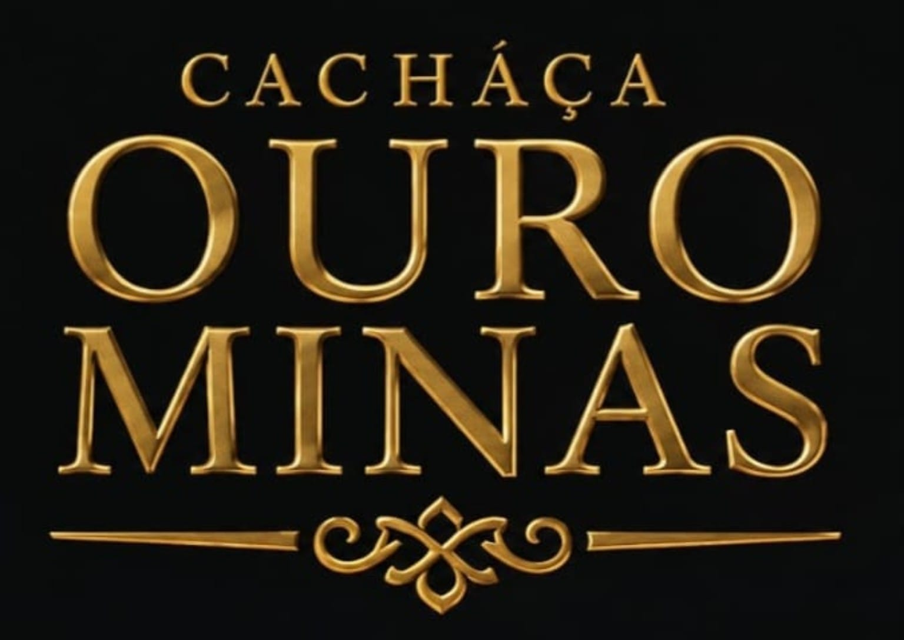
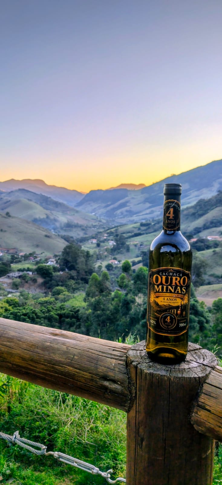
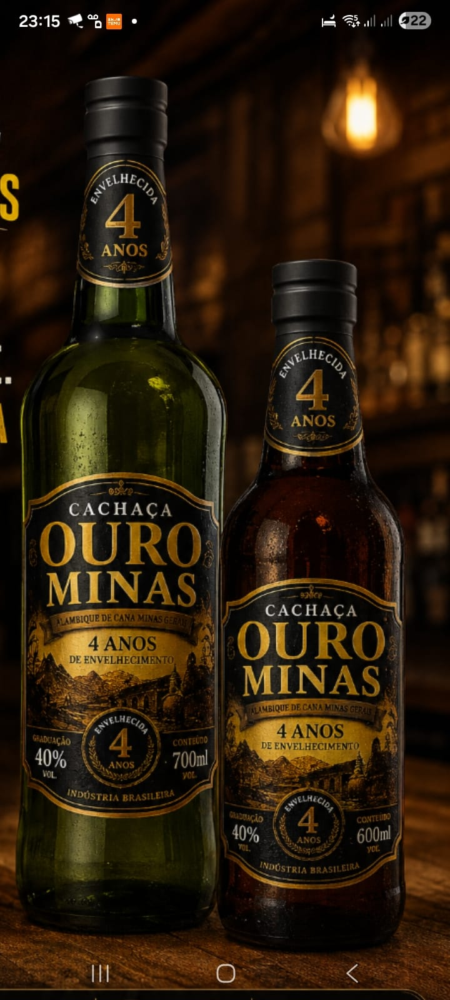
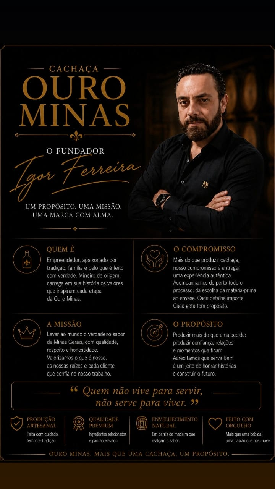

Visual
Coloração levemente amarelada, cristalina e brilhante, adquirida naturalmente pelo contato com a madeira, sem adição de corantes.

CONSUMO RESPONSÁVEL
Este site apresenta bebida alcoólica e é destinado somente a maiores de 18 anos.
Não, quero sairCACHAÇA ARTESANAL • SUL DE MINAS GERAIS
Quatro anos em barris de carvalho americano, pureza sem interferências químicas e o cuidado de quem transforma cada garrafa em uma experiência.
Venda e consumo proibidos para menores de 18 anos. Aprecie com moderação.
A VERDADEIRA CACHAÇA MINEIRA

Uma grande cachaça nasce da união entre tempo, respeito à tradição e excelência em cada detalhe.
A Ouro Minas é produzida de forma artesanal, respeitando o tempo da natureza e os processos tradicionais. Cada característica sensorial nasce da qualidade da matéria-prima, da destilação cuidadosa e do envelhecimento em barris de carvalho americano.
“Orgulho que se sente, tradição que se prova.”
Cada gole carrega história, autenticidade e o compromisso de entregar um produto que honra suas origens.
NOSSA CACHAÇA
O envelhecimento confere complexidade, equilíbrio e personalidade sem mascarar o destilado.
Coloração levemente amarelada, cristalina e brilhante, adquirida naturalmente pelo contato com a madeira, sem adição de corantes.
Notas elegantes de carvalho americano, delicados toques de baunilha, nuances de cravo e um final sutil que lembra canela.
Textura macia, oleosidade equilibrada e corpo refinado. Entrada suave, potência artesanal e final com picância e refrescância elegantes.
Sem aromatizantes, essências, corantes ou interferência química para alterar sua identidade.
ESCOLHA SUA OURO MINAS
Selecione as quantidades e envie o pedido diretamente para Igor pelo WhatsApp. Frete calculado após informar o CEP.

GARRAFA ÂMBAR
Envelhecida por quatro anos em carvalho americano • 40% vol.
GARRAFA VERDE
Envelhecida por quatro anos em carvalho americano • 40% vol.
PROTEÇÃO, IDENTIDADE E ELEGÂNCIA
A coloração âmbar e verde ajuda a reduzir a incidência de luz sobre a bebida, contribuindo para preservar aroma, sabor e a tonalidade adquirida durante quatro anos de envelhecimento.
Além da proteção, as garrafas traduzem a identidade da Ouro Minas: tradição, sofisticação e respeito por um produto elaborado com tempo e cuidado.
Protegida, autêntica e com qualidade do primeiro ao último gole.

O FUNDADOR
Um propósito, uma missão, uma marca com alma.
Empreendedor e apaixonado por tradição, família e pelo que é feito com verdade. Mineiro de origem, Igor carrega em sua história os valores que inspiram cada etapa da Ouro Minas.
“Quem não vive para servir, não serve para viver.”
FALE COM A OURO MINAS
Pedidos, disponibilidade, atacado e informações comerciais diretamente com Igor Ferreira.